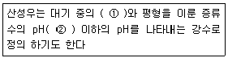
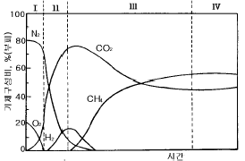

환경기능사 (2004-10-10 기출문제)
1과목: 대기오염방지
1. 어떤 송풍기의 풍전압이 250㎜H2O이고, 풍량이 6000m3/hr 일때 소요동력을 구하면? (단, 송풍기 효율 : 65%, 여유율 : 20%)
- 6.2 KW
- 7.5 KW
- 8.4 KW
- 9.1 KW
(정답률: 52%)

2. 표준상태에서 대류권내 정상공기 조성중 질소, 산소 다음으로 큰 부피를 차지하는 것은?
- 이산화탄소
- 일산화탄소
- 네온가스
- 아르곤
(정답률: 77%)
3. 황 함유량이 2%인 중유 10ton을 연소할 때 생성되는SO2의 부피는 얼마인가?(단, 함유된 황은 전량 SO2로 된다고 가정한다)
- 32Nm3
- 64Nm3
- 128Nm3
- 140Nm3
(정답률: 31%)
4. 대기의 상태가 과단열 감율을 나타내는 것으로 매우 불안정하고 심한 와류로 굴뚝에서 배출하는 오염물질을 넓은 지역에 걸쳐 분산시키지만 지표면에서는 국부적인 고농도 현상이 발생하기도 하는 연기의 형태는?
- 환상형(Looping)
- 원추형(Coning)
- 부채형(Fanning)
- 구속형(Trapping)
(정답률: 62%)
5. 함진배기가스 100m3/min를 지름 26cm, 유효길이 3m 되는 원통형 백필터로 처리하고자 한다. 가스처리 속도를 3m/min으로 할 때 소요되는 백필터의 개수는?
- 14개
- 28개
- 56개
- 72개
(정답률: 22%)
6. 함진농도가 10g/Sm3인 분진을 처리하는 1차 집진장치의 집진율이 90%인 경우, 집진율이 몇 %인 2차 집진장치를 직렬로 사용하면 출구농도를 0.2g/Sm3로 할 수 있는가?
- 65%
- 70%
- 75%
- 80%
(정답률: 38%)
7. 사이클론의 반지름이 8㎝, 유입가스의 처리속도가 3m/sec일 때 분리계수를 구하면?
- 10.5
- 11.5
- 12.5
- 13.5
(정답률: 43%)
8. 유해가스 제거방법 중 흡수법에 사용되는 흡수액의 구비 조건으로 맞는 것은?
- 흡수능력과 용해도가 커야 한다.
- 화학적으로 안정하고 휘발성이 높아야 한다.
- 독성과 부식성에는 무관하다.
- 재생의 필요성이 없고 가격이 낮아야 한다.
(정답률: 47%)
9. 다음 빈칸에 알맞는 내용은?

- ①-황화수소, ②- 4.3
- ①-이산화질소, ②- 5.6
- ①-일산화질소, ②- 4.3
- ①-이산화탄소, ②- 5.6
(정답률: 53%)
10. 연소시 연소상태를 조절하여 질소산화물 발생을 억제하는 방법과 가장 거리가 먼 것은?
- 저온도 연소
- 저산소 연소
- 수증기 분무
- 공급공기량의 과량 주입
(정답률: 79%)
11. 탄소 87%, 수소 10%, 황 3%의 조성을 가진 중유 2kg을 완전 연소시킬 때, 필요한 이론공기량은(Sm3)?
- 8.6
- 14
- 18
- 21
(정답률: 38%)
12. 지구의 대기권에서 오존층이 존재하는 권역은?
- 열권
- 성층권
- 중간권
- 대류권
(정답률: 74%)
13. 프로판(C3H8) 2Sm3가 연소하는데 필요한 이론 공기량(Sm3)은?
- 47.6
- 35.2
- 24.5
- 23.8
(정답률: 28%)
14. 다음 중 충전탑의 충전물이 갖추어야 할 조건으로 틀린 것은?
- 비표면적이 커야 한다.
- 마찰저항이 커야 한다.
- 가격이 저렴해야 한다.
- 가벼우며 일정 강도를 가져야 한다.
(정답률: 55%)
15. 정지 공기 중에서 침강하는 직경이 3㎛인 구형입자의 종말침강속도는? (단, 스토크스 법칙을 적용하며, 입자의 밀도는 5.2g/cm3이고, 점성계수는 1.85抉10-5kg/m· s이다.)
- 0.125cm/s
- 0.137cm/s
- 0.234cm/s
- 0.345cm/s
(정답률: 43%)
2과목: 폐수처리
16. 0.⑤%는 몇 ppm인가?
- 5ppm
- 50ppm
- 500ppm
- 5000ppm
(정답률: 57%)
17. 성층현상이 뚜렷한 계절을 알맞게 짝지은 것은?
- 겨울,가을
- 가을,봄
- 겨울,여름
- 봄,여름
(정답률: 76%)
18. 유입수량이 700m3/일 이고 BOD가 1,715mg/ℓ 인 하수를 활성슬러지법으로 처리하려고 한다. 포기조의 크기는? (단, 포기조의 BOD용적부하는 1.0kg/m3· 일 이다.)
- 약 2,100m3
- 약 1,715m3
- 약 1,200m3
- 약 700m3
(정답률: 41%)
19. 폭 10m, 길이 30m, 높이 3m인 장방형 침전지에 0.⑤m3/sec의 유량이 유입될 때 체류시간(hr)은?
- 3
- 4
- 5
- 6
(정답률: 40%)
20. 생물학적 원리를 이용하여 영양염류(인 또는 질소)를 효과적으로 제거할 수 있는 공법이라 볼 수 없는 것은?
- M-A/S
- A/o
- Bardenpho
- UCT
(정답률: 48%)
21. 98%의 수분을 갖는 슬러지 100m3를 탈수하여 수분이 80% 되었다면 슬러지 부피는?
- 10m3
- 30m3
- 50m3
- 80m3
(정답률: 24%)
22. 폭기조내 슬러지 용적지표(SVI:Sludge Volume Index)가 높다면 다음 중 어느 것을 의미하는가?
- 슬러지의 밀도가 증가하였다.
- 슬러지내 휘발성분이 줄어들었다.
- 슬러지 팽화의 우려가 있다.
- 슬러지는 아주 빨리 침강한다.
(정답률: 71%)
23. 폐수처리장의 최종방류수 유량이 5000m3/day이고 방류수의 부유물질(SS) 농도가 15mg/L일 때 하루에 배출되는 총고형 물질의 양은 얼마인가?
- 75kg
- 100kg
- 180kg
- 250kg
(정답률: 28%)
24. 알칼리도에 관한 설명으로 틀린 것은?
- 산이 유입될 때 이를 중화시킬 수 있는 능력의 척도이다.
- 알칼리도는 물에 알칼리를 주입,소모된 알칼리물질의 양을 환산한 값이다.
- 알칼리도 유발물질로는 수산화물,중탄산염,탄산염등이 있다.
- 알칼리도가 높은 물은 다른 이온과 반응성이 좋아 관내 침적물을 형성할 수 있다.
(정답률: 42%)
25. 혐기성 소화 과정에서 에너지원이 될 수 있는 최종 생성물은?
- CO2
- CH4
- H2S
- NH3
(정답률: 50%)
26. Ca(OH)2 1mM이 용해된 수용액의 pH는? (단, Ca(OH)2 100% 완전해리됨)
- 10.4
- 10.7
- 11.0
- 11.3
(정답률: 29%)
27. 에탄올(C2H5OH) 420mg/L이 함유된 폐수의 이론적인 COD 값은?
- 877mg/L
- 897mg/L
- 927mg/L
- 967mg/L
(정답률: 25%)
28. 살수여과상의 투입조의 부피가 2000m3이다. 이 투입조를 하수로 채우는데 5분이 소요된다면 투입조로 흘러들어오는 하수의 유량은?
- 20(m3/분)
- 100(m3/분)
- 200(m3/분)
- 400(m3/분)
(정답률: 55%)
29. 소수성 콜로이드에 관한 설명으로 틀린 것은?
- 염에 대하여 큰 영향을 받지 않는다
- 매우 작은 입자로 존재한다
- 물과 반발하는 성질을 가지고 있다
- 물속에 현탁상태로 존재한다
(정답률: 51%)
30. C2H5NO2 의 이론적 산소요구량(g/mol)은? (단, 최종분해물질은 CO2, H2O, HNO3 이다 )
- 89
- 94
- 112
- 134
(정답률: 53%)
31. 침전지에서 입자가 100% 제거되기 위해서 요구되는 침전 속도는?
- 표면 부하율
- 침강 속도
- 침전 효율
- 유입 속도
(정답률: 42%)
32. 해수의 특성에 관한 설명으로 틀린 것은?
- 해수는 염분외에 온도만 측정하면 해수의 비중을 알 수 있다
- 해수의 주요 성분 농도비는 항상 일정하다
- 염분은 적도해역에서는 높고 남북 양극 해역에서는 다소 낮다
- 해수의 Mg/Ca비는 300-400 정도로 담수보다 크다
(정답률: 50%)
33. 지구상 존재하는 담수중 가장 많은 부분을 차지하는 형태는?
- 호소수
- 하천수
- 지하수
- 빙하
(정답률: 75%)
34. 다음중 산화와 관련이 없는 것은?
- 수소를 잃는 현상
- 산소와 화합하는 현상
- 전자를 잃는 현상
- ‘ 원자가’ 가 감소하는 현상
(정답률: 61%)
35. 모래,자갈, 뼈조각의 무기물로 구성된 혼합물을 무엇이라 하는가?
- screenings
- grit
- sludge
- scum
(정답률: 69%)
3과목: 폐기물처리
36. 폐기물중 유기물을 완전 연소시키기 위한 필요 조건이 아닌 것은?
- 온도
- 기압
- 연소시간
- 혼합
(정답률: 63%)
37. 폐기물 고형화에 대한 설명으로 틀린 것은?
- 폐기물을 물리적으로 고립시킬 수 있다.
- 폐기물을 화학적으로 안정시킨다.
- 부피축소로 처분비용, 운반비용을 줄일 수 있다.
- 폐기성분의 자연계 유출을 지연시킨다.
(정답률: 31%)
38. 폐기물의 성분을 분석한 결과 가연성 물질이 무게로 30%였다. 밀도 500kg/m3인 쓰레기 5m3 가 가지는 가연성 물질의 양은?
- 800kg
- 750kg
- 650kg
- 600kg
(정답률: 56%)
39. 유해폐기물을 유해특성(hazardous characteristics)에 의해서 분류할 때 관계가 먼 것은?
- 부패성
- 폭발성
- 반응성
- 인화성
(정답률: 50%)
40. 매립지의 침출수발생 및 그 성상에 관한 다음 설명 중 옳지 않은 것은?
- 침출수내 유기물질의 농도는 대체적으로 매립지에서 가스가 많이 생산될수록 저하된다.
- 침출수내 유기물질의 농도는 매립지내 혐기성분해가 잘 일어날수록 저하된다.
- 침출수의 특성은 폐기물의 종류와 분해 특성에 따라 크게 달라진다.
- 침출수내에는 중금속이 거의 포함되어 있지 않기 때문에 생물학적처리가 가장 효과적이다.
(정답률: 54%)
41. 메탄 16kg 연소시키는데 필요한 이론적 산소의 량은?
- 16kg
- 32kg
- 48kg
- 64kg
(정답률: 37%)
42. 폐기물의 공기 선별시 투입되는 폐기물 입자에 작용하는 힘과 가장 거리가 먼 것은?
- 중력
- 부력
- 항력
- 정전기력
(정답률: 55%)
43. 쓰레기 발생량에 영향을 미치는 요인에 관한 설명으로 틀린 것은?
- 수거빈도가 낮거나 쓰레기통의 크기가 적으면 발생량이 많아 지는 경향이 있다.
- 부엌용 분쇄기를 사용할 경우 음식쓰레기 발생량이 제한적으로 감소한다.
- 쓰레기 관련 법규는 쓰레기 발생량에 매우 중요한 영향을 미친다.
- 생활수준이 높은 주민들의 쓰레기 발생량은 그렇지 않은 주민들보다 많다.
(정답률: 60%)
44. 쓰레기 수거노선을 결정할 때 고려사항으로 틀린 것은?
- U자형 회전을 피하여 수거한다.
- 가능한 한 시계방향으로 수거노선을 정한다.
- 아주 많은 양의 쓰레기가 발생되는 발생원은 하루중 가장 나중에 수거한다.
- 적은 양의 쓰레기가 발생하나 동일한 수거빈도를 받기를 원하는 수거지점은 가능한 한 같은 날 왕복내에서 수거하도록 한다.
(정답률: 72%)
45. 쓰레기의 양이 1,000m3며 밀도는 0.9톤/m3이다. 적재용량이 13톤인 차량이 있다면 모든 쓰레기를 동시에 운반하는데 몇대의 차량이 필요한가?
- 69대
- 70대
- 71대
- 72대
(정답률: 44%)
46. 폐기물을 잘게 부수는 파쇄 장치를 작용하는 힘에 따라 분류할 때 적당하지 않은 것은?
- 임호프파쇄기
- 전단식파쇄기
- 충격식파쇄기
- 압축식파쇄기
(정답률: 68%)
47. 노의 하부로부터 가스를 주입하여 모래를 띄운 후 이를 가열시켜 상부에서 폐기물을 투입하여 소각하는 방법은?
- 유동상소각로
- 다단로
- 회전로
- 고정상소각로
(정답률: 70%)
48. 쓰레기 발생량을 조사하는 방법중 대표적인 것이라 볼 수 없는 것은?
- 적재차량 계수분석
- 물질 수지법
- 통계 분석법
- 직접 계근법
(정답률: 68%)
49. 다음 그림은 폐기물을 매립한 후 발생하는 생성가스의 농도 변화를 단계적으로 나타낸 것이다. 유기물이 효소에 의해 발효되는 혐기성 비메탄 단계는?

- Ⅰ구역
- Ⅱ구역
- Ⅲ구역
- Ⅳ구역
(정답률: 70%)
50. 폐기물을 수집하기 위한 적환장의 설치 이유와 가장 거리가 먼 것은?
- 작은 용량의 수집차량을 이용할 때
- 작은 규모의 주택들이 밀집되어 있을 때
- 상업지역의 수거에 대형용기를 사용할 때
- 처분지가 수집 장소로부터 비교적 멀리 떨어져 있을 때
(정답률: 59%)
51. 폐기물의 처리 방법 중 가장 우선적으로 고려되어야 할 사항은?
- 발생 억제와 재활용
- 퇴비화
- 매립
- 소각열 회수
(정답률: 56%)
52. 수분함량이 30%인 쓰레기를 건조시켜 수분함량이 10%인 쓰레기를 만들려면 쓰레기 1톤당 증발시켜야 하는 수분량은?
- 78kg
- 125kg
- 167kg
- 223kg
(정답률: 34%)
53. 관거 수거에 관한 설명으로 틀린 것은?
- 자동화, 무공해화가 가능하다.
- 가설 후에 경로 변경이 곤란하고 설치비가 높다.
- 잘못 투입된 물건의 회수가 용이하다.
- 큰 쓰레기는 파쇄, 압축등의 전처리를 해야 한다.
(정답률: 66%)
54. 폐기물중의 가연성 물질만을 선별해 함수율, 불순물, 입경, 소각재 함량등을 조절하여 연료화 시킨 것을 무엇이라 하는가?
- RDF
- TSS
- HHV
- MHT
(정답률: 69%)
55. 매립시설에서 복토의 목적과 가장 거리가 먼 것은?
- 빗물 배제
- 화재 방지
- 식물 성장 방지
- 쓰레기 비산 방지
(정답률: 73%)
4과목: 소음 진동학
56. 1초 동안에 사이클(cycle)수를 말하는 것은?
- 주기
- 주파수
- 진폭
- 파장
(정답률: 39%)
57. 각각의 음압레벨이 96dB, 100dB, 90dB, 97dB인 음의 평균 음압레벨은?
- 98 dB
- 97 dB
- 95 dB
- 93 dB
(정답률: 38%)
58. 측정음압실효치가 1.0 N/m2 때 음압레벨(SPL)은?
- 54㏈
- 74㏈
- 94㏈
- 114㏈
(정답률: 40%)
59. 음파가 난입사하고 질량법칙이 적용되는 경우,교실의 단일벽 면밀도가 300[㎏/m2]이라면 0.1[㎑]에서의 투과손실은? (단, TL = 18logmf - 44 적용 )
- 26.6㏈
- 36.6㏈
- 46.6㏈
- 56.6㏈
(정답률: 42%)
60. 음원이 움직일때 진동수의 변화가 생겨서 그 진행방향 쪽에서는 발생 음보다 고음으로, 진행방향의 반대쪽에서는, 저음으로 들리는 현상을 무엇이라 하는가?
- 에코효과
- 도플러효과
- 맥놀이효과
- 음의 간섭효과
(정답률: 78%)
소요동력 = (풍량 × 풍전압) ÷ (효율 × 여유율)
여기에 주어진 값들을 대입하면,
소요동력 = (6000 × 250) ÷ (0.65 × 0.2) ≈ 7.5 KW
따라서 정답은 "7.5 KW" 입니다.